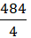
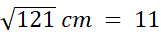
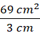
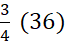
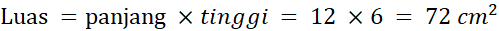

1. Pada sebuah jajargenjang diketahui luasnya 484 cm2. Jika panjang alas jajargenjang tersebut 4x dan tingginya x, tentukan nilai x, panjang alas dan tinggi jajargenjang tersebut?
Penyelesaian:
Untuk mencari nilai x kita gunakan rumus luas jajar genjang, yakni:

484 cm2 = (4x) x (x)
484 cm2 = 4x2
x2 = cm
x = 
Setelah ketemu nilai x maka panjang alas jajar genjang dapat dicari yaitu:
Panjang alas = 4x
Panjang alas = 4 x 11 cm
Panjang alas = 44 cm
Dengan cara yang sama (memasukan nilai x) kita akan dapatkan panjang tinggi jajargenjang yaitu:
Panjang tinggi = x
Panjang tinggi = 1 x 11 cm
Panjang tinggi = 11cm
Jadi panjang alas = 44 cm dan tinggi = 11 cm
2. Luas jajar genjang ABCD adalah dan tingginya 3 cm. Tentukan panjang alasnya.
Penyelesaian:

alas = 
alas = 23 cm
Jadi panjang alas = 23 cm
3. Diketahui jajar genjang ABCD dengan AB = 36 cm dan AB : BC = 4 : 3 dengan jika tinggi = 5 cm, hitunglah kelilingnya?

Gambar 14 (Jajar Genjang)
Penyelesaian
Untuk mancari keliling ABCD terlebih dahulu harus mencari panjang BC dengan menggunakan konsep perbandingan, yaitu:
AB : BC = 4 : 3
12 cm : BC = 4 : 3
BC = 
BC = 3 (9)
BC = 27 cm
Dengan menggunakan panjang BC kita bisa mencari keliling jajar genjang yaitu:
keliling = 2 (AB+BC)
keliling = 2 (36 cm + 27 cm)
keliling = 2 (63 cm)
keliling = 126 cm
Jadi keliling jajar genjang = 126 cm
4. Diketahui jajar genjang ABCD dengan AB = 12 cm dan tinggi = 6 cm, hitunglah luasnya?
Penyelesaian
Jawab:

Jadi luas jajargenjang =
5. Keliling jajargenjang adalah 50 cm. Jika panjang dua sisinya 30 cm, maka panjang sisi yang satunya adalah .... cm
Penyelesaian
Diketahui keliling = 50 cm, panjang dua sisinya=
30 cm
Ditanyakan panjang sisi satunya?
K = 2 x (a + b)
50 cm = 2a + 2b
50 cm = 30 cm + 2b
2b =
2b = 20 cm
b = 20 : 2 = 10 cm
Jadi, panjang sisi yang satunya
adalah 10 cm
6. Ali mengelilingi lapangan yang berbentuk jajargenjang dengan panjang alas 120 meter dan panjang sisi 80 meter. Jika Ali berlari sebanyak 3 kali putaran, maka jarak yang ditempuh Ali adalah .... meter.
Penyelesaian
Diketahui panjang alas = 120 m, panjang sisi
satunya = 80 m, banyaknya putaran = 3
Ditanyakan jarak tempuh?
Untuk mengetahui jarak tempuh, kita
harus menghitung keliling lapangan.
K = 2 x (a + b)
K = 2 x (120 m + 80 m)
K = 400 m
Jarak tempuh = K x banyaknya putaran
Jarak tempuh = 400 x 3 = 1.200 meter
Jadi jarak yang ditempuh ali = 1.200 meter
7. Talita sedang membuat prakarya dari kertas karton berbentuk jajargenjang dengan panjang sisi 75 cm dan sisi yang satunya 55 cm. Pada kertas karton tersebut akan ditempelkan manik-manik dengan jarak 5 cm. Banyaknya manik-manik yang dibutuhkan Talita adalah .... buah
Penyelesaian
Diketahui panjang sisi = 75 cm, panjang sisi
satunya = 55 cm, jarak manik-manik = 5 cm
Ditanyakan manik-manik yang
dibutuhkan?
Untuk mengetahui manik-manik yang
dibutuhkan kita harus menghitung keliling jajargenjang.
K = 2 x (a + b)
K = 2 x (75 cm + 55 cm)
K = 260 cm
Manik-manik yang dibutuhkan = K :
jarak manik-manik
Manik-manik yang dibutuhkan = 260 :
5 = 52
Jadi, manik-manik yang dibutuhkan
Talita sebanyak 52 buah
8. Kebun kakek berbentuk jajargenjang dengan panjang sisi 36 dan 28 meter akan dibuatkan pagar dari bambu. Tiap meter membutuhkan 3 bambu. Berapa banyak bambu yang dibutuhkan untuk membuat pagar kebun kakek?
Penyelesaian
Diketahui panjang sisi = 36 m dan 28 m, bambu
yang dibutuhkan tiap meter = 3
Ditanyakan bambu yang dibutuhkan?
Untuk mengetahui jumlah bambu yang
dibutuhkan, kita harus menghitung keliling kebun.
K = 2 x (a + b)
K = 2 x (36 m + 28 m)
K = 2 x 64 m
K = 128 m
Jumlah bambu yang dibutuhkan = K × banyak bambu per meter
Jumlah bambu yang dibutuhkan = 128 x 3 = 384
Jadi, bambu yang dibutuhkan untuk membuat pagar jumlahnya ada 384
9. Sebuah tambak berbentuk jajargenjang dengan panjang sisi 75 meter dan 55 meter. Tambak tersebut akan dikelilingi batako. Tiap meter membutuhkan 15 batako. Berapa batako yang dibutuhkan untuk mengelilingi tambak tersebut?
Penyelesaian
Diketahui panjang sisi = 75 m dan 55 m, batako
yang dibutuhkan tiap meter = 15
Ditanyakan batako yang dibutuhkan?
Untuk mengetahui jumlah batako yang
dibutuhkan, kita harus menghitung keliling tambak.
K = 2 x (a + b)
K = 2 x (75 m + 55 m)
K = 260 m
Jumlah batako yang dibutuhkan =
Jumlah bambu yang dibutuhkan = 260 x
15 = 3.900
Jadi, batako yang dibutuhkan
untuk mengelilingi tambak jumlahnya ada 3.900
10. Kebun kakek berbentuk jajargenjang dengan panjang sisi 75 m. dan panjang sisi yang satunya 65 m. Kebun tersebut akan dibuatkan pagar dengan biaya Rp 80.000,00/meter. Biaya yang dibutuhkan adalah ....
Penyelesaian
Diketahui panjang sisi = 75 m, panjang sisi
satunya = 65 m, biaya pagar = Rp 80.000,00/meter
Ditanyakan biaya yang dibutuhkan?
Untuk mengetahui biaya yang
dibutuhkan kita harus menghitung keliling kebun.
K = 2 x (a + b)
K = 2 x (75 m + 65 m)
K = 280 m
Biaya yang dibutuhkan = K × biaya pagar/meter
Biaya yang dibutuhkan = 280 m x Rp
80.000,00/m
Biaya yang dibutuhkan = Rp
22.400.000,00
Jadi Biaya yang dibutuhkan = Rp 22.400.000,00